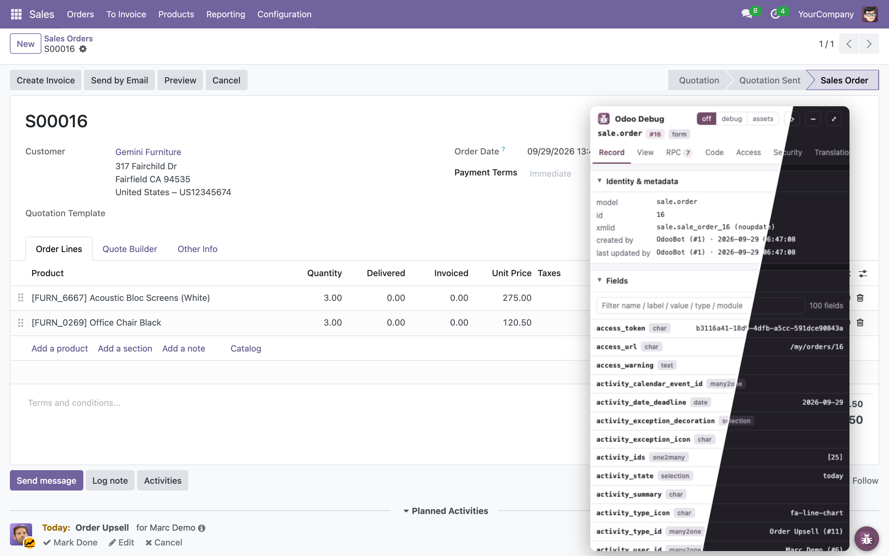
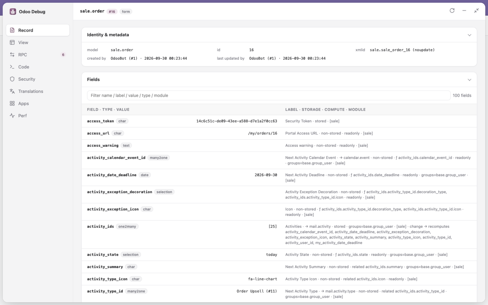
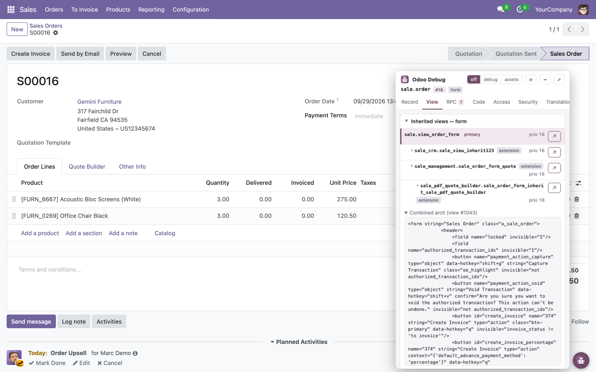
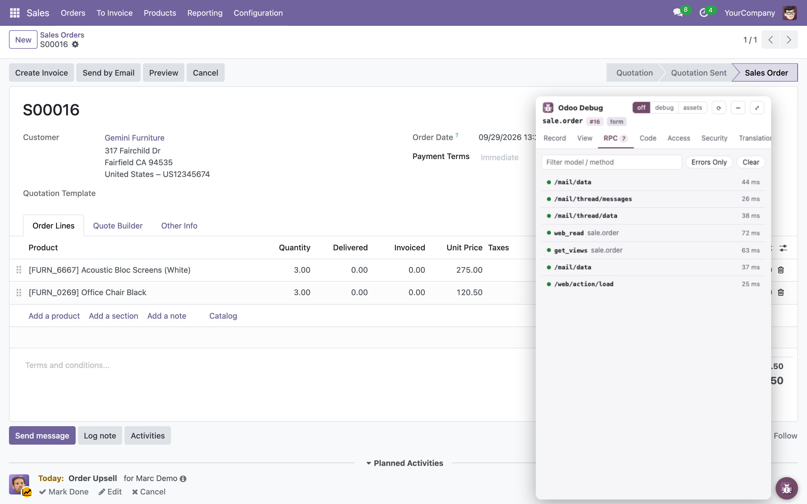
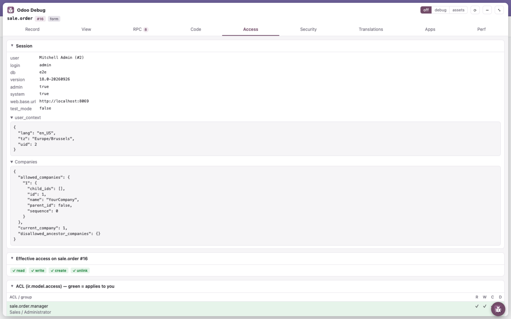
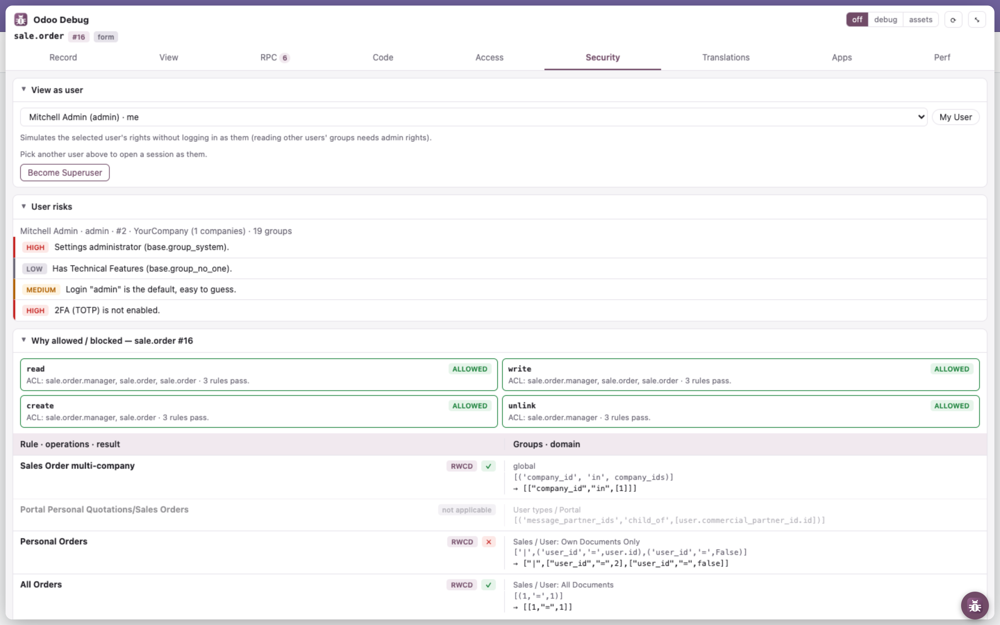
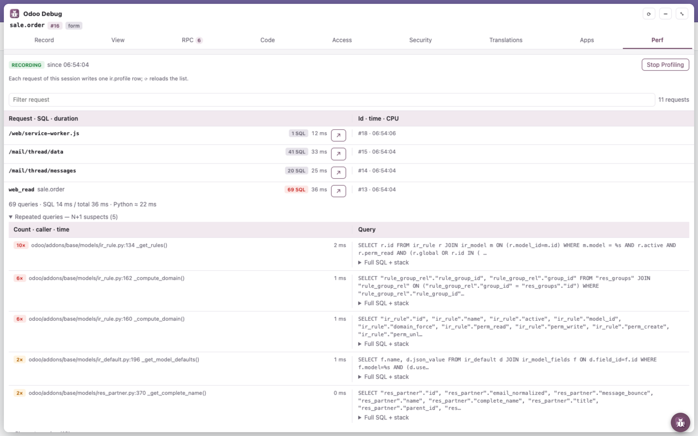

Stop guessing. See why Odoo does what it does.
Đừng đoán nữa. Thấy ngay vì sao Odoo chạy như vậy.
A debug panel right on the Odoo page: which module adds a field, which inherited view changed the form, which RPC failed, which record rule blocks a user, which request fires 50 SQL queries.
Bảng debug ngay trên trang Odoo: module nào thêm field, view kế thừa nào sửa form, RPC nào lỗi, record rule nào chặn user, request nào bắn ra 50 câu SQL.

Developer mode shows what. Odoo Debug shows why.
Developer mode cho thấy cái gì. Odoo Debug cho thấy vì sao.
Everything you usually dig out of the source code, the database or the server log, one click away on the page you are debugging.
Mọi thứ bạn thường phải lục trong source code, database hay log server, giờ chỉ cách một cú click ngay trên trang đang debug.
Six tabs, every answer
Sáu tab, đủ mọi câu trả lời
Pick a tab to see it on a real Odoo sales order.
Chọn một tab để xem nó trên một đơn bán hàng Odoo thật.
Every field, fully explained
Mọi field, giải thích đầy đủ
- xmlids,
noupdate, who created and last updated the record - Type, value, module, storage for every field
- Compute / related source,
groups= - Which fields each one triggers a recompute of
- xmlid,
noupdate, ai tạo và ai sửa record lần cuối - Kiểu, giá trị, module, cách lưu của mọi field
- Nguồn compute / related,
groups= - Field nào kích hoạt tính lại những field nào

Who changed this form?
Ai đã sửa form này?
- Inheritance tree: primary + extensions, priority, source file
- Combined arch, as the webclient receives it
- Action details
invisible/readonly/requiredevaluated like the webclient, Pick on page
- Cây kế thừa: primary + extension, priority, file nguồn
- Arch đã gộp, đúng như webclient nhận được
- Thông tin action
invisible/readonly/requiredtính đúng như webclient, Chọn trên trang

Every call, from page load
Mọi lời gọi, từ lúc tải trang
- Live log of JSON-RPC and JSON-2 calls with timing
- Errors with the full Python traceback
- “Why was it blocked?” jumps to Security for
AccessErrors
- Nhật ký trực tiếp JSON-RPC và JSON-2 kèm thời gian
- Lỗi kèm đầy đủ traceback Python
- “Vì sao bị chặn?” nhảy sang Security khi gặp
AccessError

Your session, your rights
Phiên của bạn, quyền của bạn
- db, version,
web.base.url,test_mode - Effective rights, ACLs, record rules, groups
- System parameters, secrets masked
- Installed modules
- db, version,
web.base.url,test_mode - Quyền thực tế, ACL, record rule, nhóm
- Tham số hệ thống, giá trị bí mật được che
- Các module đã cài

Why is this user blocked?
Vì sao user này bị chặn?
- Simulate another user's rights without logging in as them
- Rule by rule: which one allows, which one blocks
- User risk audit, fields hidden by
groups= - Instance checks: HTTPS, cookie flags, security headers, database manager
- Giả lập quyền của user khác mà không cần đăng nhập bằng user đó
- Từng rule một: rule nào cho phép, rule nào chặn
- Đánh giá rủi ro user, field bị ẩn bởi
groups= - Kiểm tra instance: HTTPS, cờ cookie, security header, database manager

Find the N+1 before your users do
Bắt N+1 trước khi người dùng than chậm
- Odoo's built-in server profiler, one click to start / stop
- SQL count and duration of every request
- Repeated queries (N+1 suspects) and the slowest ones, with caller
- Speedscope flame graph
- Profiler có sẵn của Odoo, một click để bật / tắt
- Số câu SQL và thời gian của từng request
- Câu lặp lại (nghi N+1) và câu chậm nhất, kèm nơi gọi
- Flame graph speedscope

Install in a minute
Cài trong một phút
Not on the Chrome Web Store yet: install it unpacked in Chrome, Edge, Brave or any Chromium browser.
Chưa có trên Chrome Web Store: cài dạng unpacked trên Chrome, Edge, Brave hoặc trình duyệt nhân Chromium bất kỳ.
- Download
odoo-debug-v<version>.zipfrom Releases and unzip it.Tảiodoo-debug-v<version>.ziptừ Releases rồi giải nén. - Open
chrome://extensionsand turn on Developer mode.Mởchrome://extensionsvà bật Developer mode. - Click Load unpacked and select the unzipped folder.Bấm Load unpacked và chọn thư mục vừa giải nén.
- Open any Odoo page and click the round button.Mở một trang Odoo bất kỳ và bấm vào nút tròn.
Private by design
Riêng tư ngay từ thiết kế
- Talks only to the Odoo server of the tab you are on, with your own session
- No backend, no analytics, no tracking
- The session cookie value is never read, only its flags
- Odoo data only reaches the page through
textContent - Open source: read every line on GitHub
- Chỉ nói chuyện với server Odoo của tab đang mở, bằng chính phiên của bạn
- Không backend, không analytics, không theo dõi
- Không bao giờ đọc giá trị cookie phiên, chỉ đọc các cờ của nó
- Dữ liệu Odoo chỉ vào trang qua
textContent - Mã nguồn mở: đọc từng dòng trên GitHub
Compatibility
Tương thích
| Browser | Trình duyệt | Chrome, Edge, Brave and other Chromium browsers (Manifest V3)Chrome, Edge, Brave và các trình duyệt nhân Chromium (Manifest V3) |
|---|---|---|
| Languages | Ngôn ngữ | English, Tiếng Việt |
| Themes | Giao diện | System, light, darkTheo hệ thống, sáng, tối |
Debug Odoo the way you wish you always had
Debug Odoo theo cách bạn luôn mong muốn
Free, open source, and built by Odoo developers. Issues and pull requests welcome.
Miễn phí, mã nguồn mở, do lập trình viên Odoo làm ra. Hoan nghênh issue và pull request.
★ Enjoying Odoo Debug? Give it a star on GitHubThấy Odoo Debug hữu ích? Tặng một sao trên GitHub nhé It is free and always will be. A star is the easiest way to say thanks, and it helps other Odoo developers find it. Extension miễn phí và sẽ luôn miễn phí. Một ngôi sao là cách cảm ơn đơn giản nhất, và giúp các lập trình viên Odoo khác tìm thấy nó.